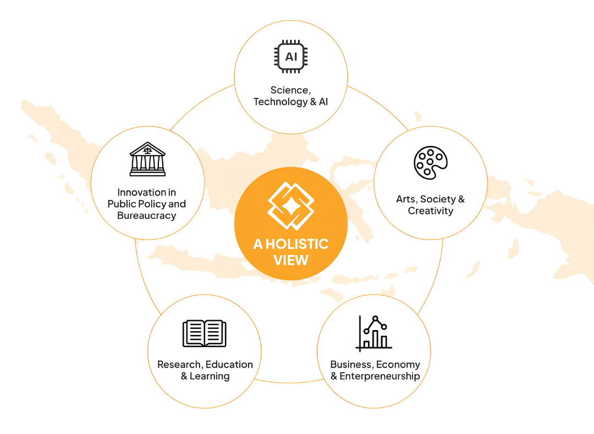
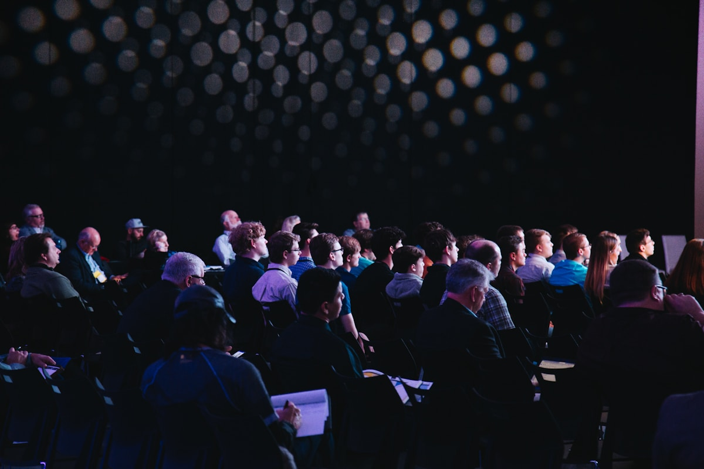

Shaping the Next Generation of Holistic Indonesian Leaders
Mempersiapkan siswa SMA hingga mahasiswa dengan pemahaman holistik tentang dunia dan Indonesia — memimpin dengan kejernihan, empati, dan dampak nyata.
NSLC 2026
National Student Leaders Conference
3–4 Oktober 2026
Sabtu–Minggu · 08.00–20.30 WIB
A new kind of leadership ecosystem
Kepemimpinan sejati berawal dari pengenalan akan dunia, bangsa, dan diri sendiri
Di Indonesia Future Leaders Hub (IFLH), kami percaya bahwa pemimpin masa depan membutuhkan kejernihan intelektual, empati sosial yang mendalam, dan keberanian untuk menghadirkan dampak nyata.
Melalui inisiatif ini, kami membuka ruang bagi pemimpin masa depan untuk mengintegrasikan sains, seni, ekonomi, riset, dan kebijakan publik ke dalam satu visi kepemimpinan yang holistik.
Lima Lensa Eksplorasi
Dalam setiap inisiatif, kami menghadirkan lima lensa eksplorasi untuk membantu calon pemimpin membaca keterhubungan antara gagasan, peradaban, dan masa depan.

National Student Leaders Conference 2026

Understanding the World, Finding Your Place in It
Konferensi intensif dua hari bagi pimpinan organisasi pelajar se-Indonesia (OSIS, MPK, Pramuka, PMR, dan mahasiswa). Bertukar wawasan bersama tokoh nasional, praktisi industri, dan pembuat kebijakan di University Club Jakarta.
 The Sabri Podcast
The Sabri Podcast
 University Club Jakarta
University Club Jakarta